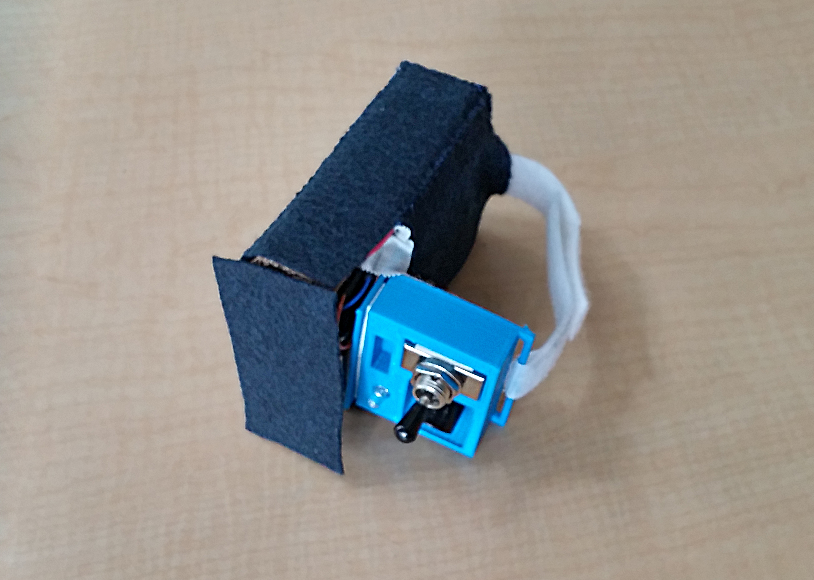
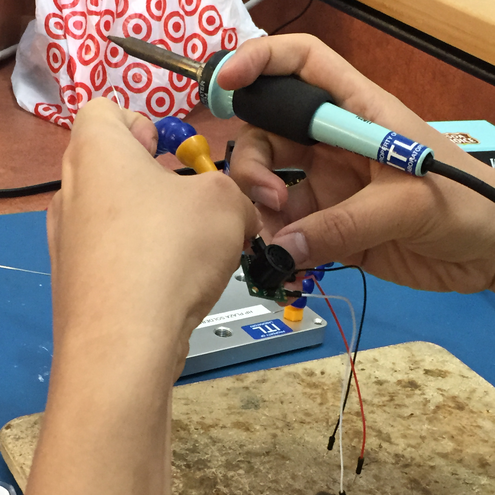
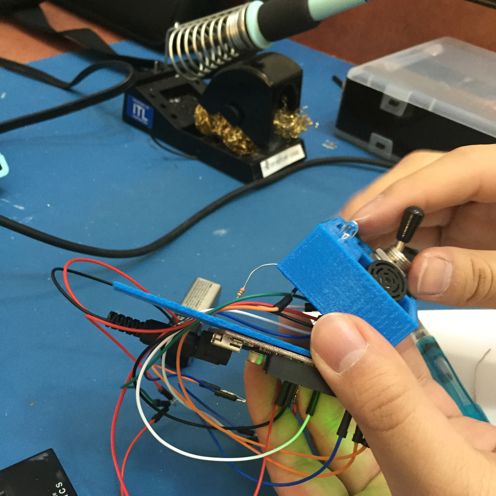
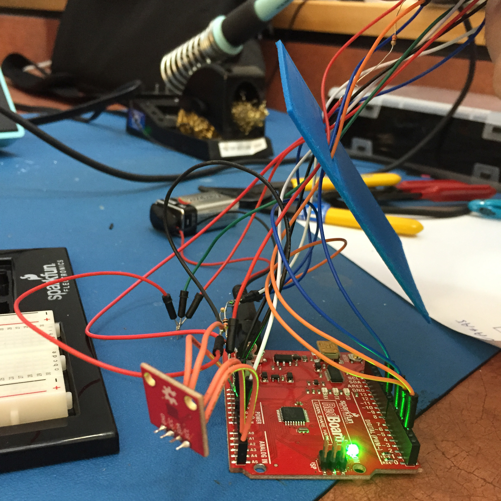
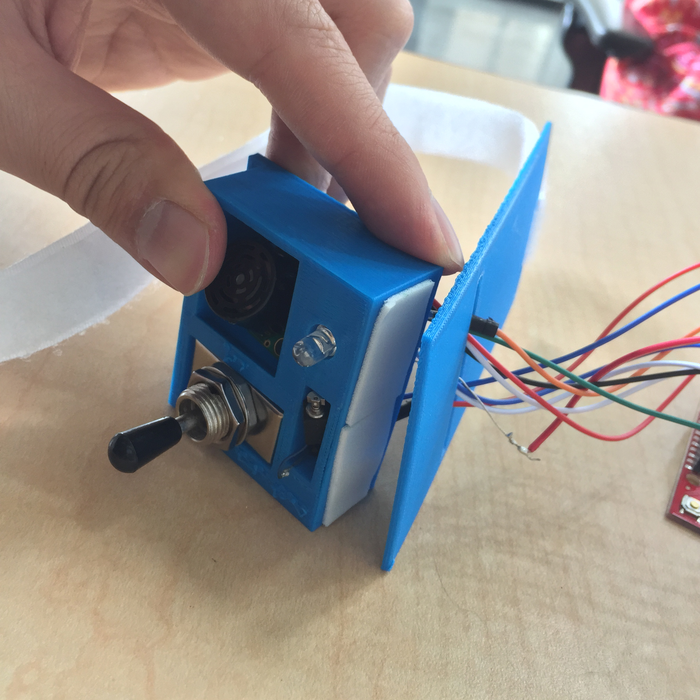
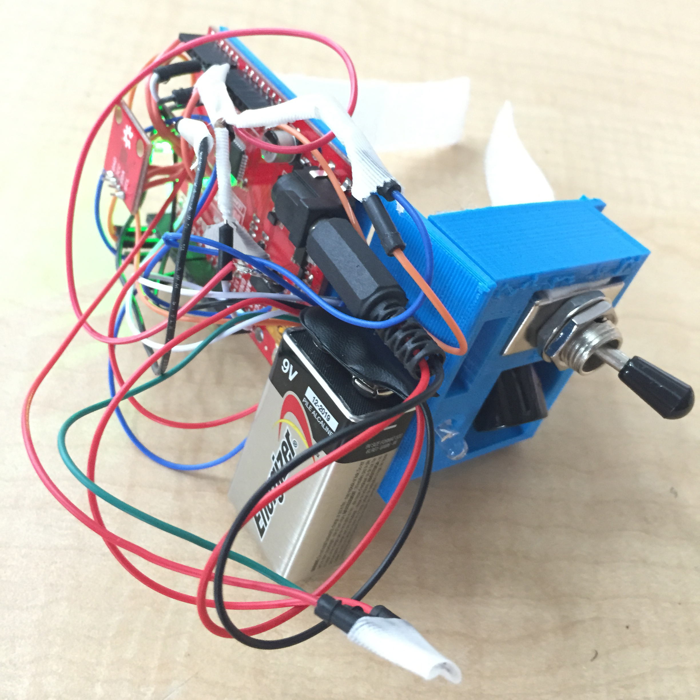
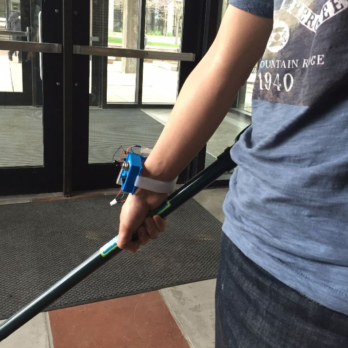

Blind Guider is a course project. It is a wearable device aims to help blind people to understand their surroundings.

We conducted user interview and competitive research, design and 3D printing for physical appearance, programming for Arduino chip and sensors.
- It detects the presence of obstacles in front of the user without the need of physical contact.
- It gives a flashing light to inform surrounding people if the user is walking towards them.
- It uses a built in compass to guide users to the directions they need.



Blind Guider uses vibration as an indicator of objects in the way, or to show directions in the compass mode. We hope that Blind Guider could provide protection to the visually impaired, and make their life easier.


